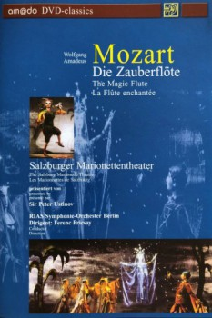

Also known as:Salzburger Marionettentheater: Die Zauberflöte (original title)
Country:Austria, 105 minutes
Spoken languages:English, French, German
Genres:Music, Family, Fantasy
Director(s):Georg Wübbolt
Writer(s):
Video Codec:Unknown
Number: 6510

Certification:
Storyline:
The Queen of the Night has begged Prince Tamino to free her daughter Pamina from the clutches of the High Priest Sarastro, who has abducted her. Together with the bird-catcher Papageno, Tamino enters Sarastro's realm to seek her. When he finds her, the two fall in love, but they have to have to undergo ordeals before they can be together. At the end, Papageno is also rewarded with his Papagena.
Cast:
Peter Ustinov (as Narrator), Joseph Greindl (as Sarastro), Rita Streich (as Queen of the Night), Maria Stader (as Pamina), Ernst Haefliger (as Tamino)
Medium: Media file,
Location: D:\Puppetry\Marionette Magic (1935).mp4
Loaned: No
Aspect ratio: Unknown